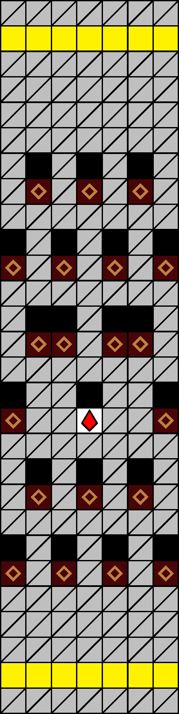
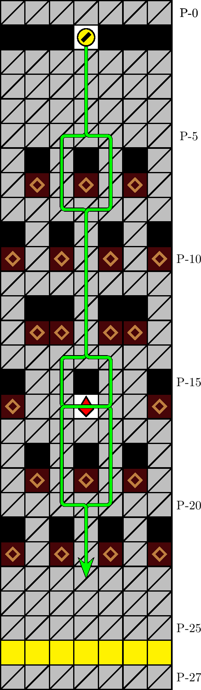

一般指針
エリア・ネット




指針
ネットは，直下掘りを基本として潜行し，ザクロを取得します．
解説
ネットとは，図 3.2.2.1 のエリアを指します． 100 m, 400 m, 700 m, 900 m型の 57 行目に確率で出現します． P-6 行目の壁の配列によって同定されます．
エリアの始点深度及び終点深度（黄色の行）はそれぞれ，パターン WL, WC, WR のいずれかです（図3.2.2.3–3.2.2.5）． P-5 行目から P-23 行目までに出現する塊は，図 3.2.2.1. のもので全部です．エリア始点深度のパターンが WL, WR の場合は，直下傾向の経路を取る限り潜行速度に違いはありません． WC の場合は，図 3.2.2.2. の経路が定型です*1．なお，状況に応じて最適な経路は変化しうるため，定型経路を正確に進行できたり，定型経路が最速であったりするとは限りません．
P-20 行目の時点では， P-26 行目のパターンを特定することはできません．このため， P-21 行目のどのマスを通過するとしても，平均潜行速度に確率的に有意な差は生じないと考えられます． P-21 行目の通過は，都度直下傾向に従うものを原則とします．
レーザーステージの場合は，始点深度のパターンによらず 0 列へ移動したうえでの潜行も有効です．
寿命確保のためにザクロの取得は推奨されますが，緩行のうえでも危険な場合は無視して潜行します．なお， P-26 行目にも確定でザクロが出現することに注意します．
脚注
- *1 ザクロ取得のためには，ザクロの座標 P-(16, 0) を横断する必要はありません．また，経路の選択は複数ありますが，一般にはどれも等価です．